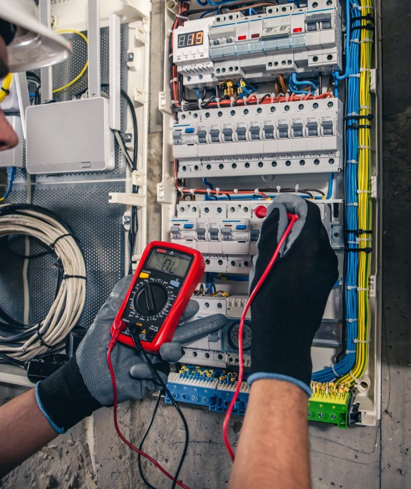
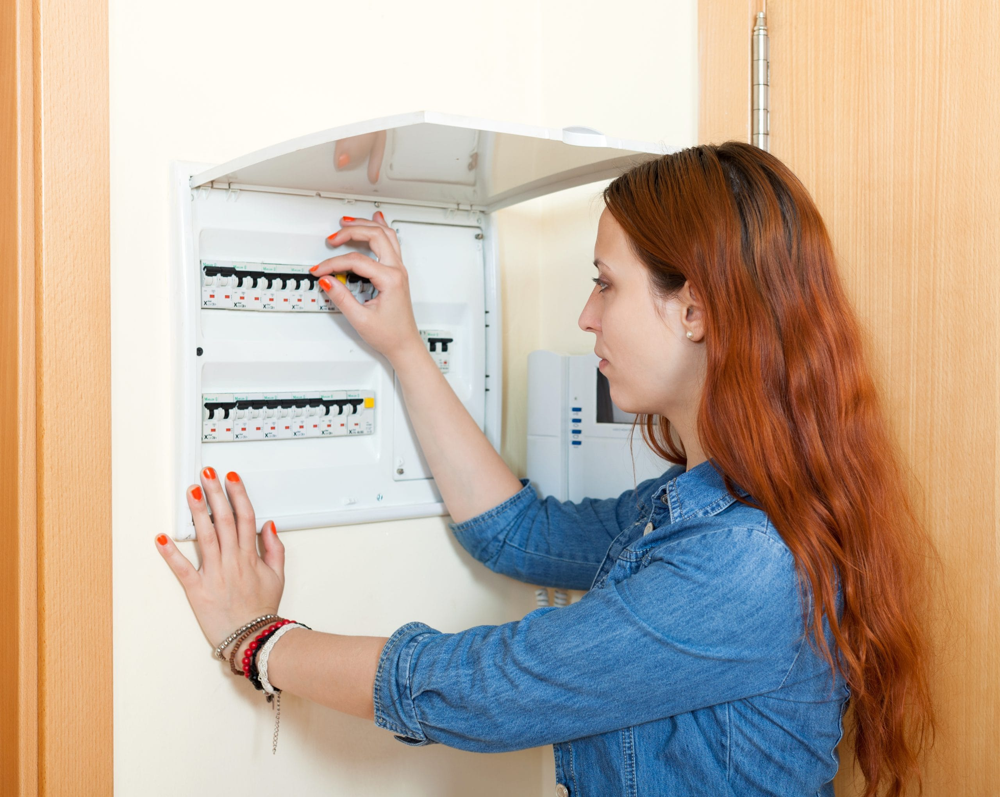
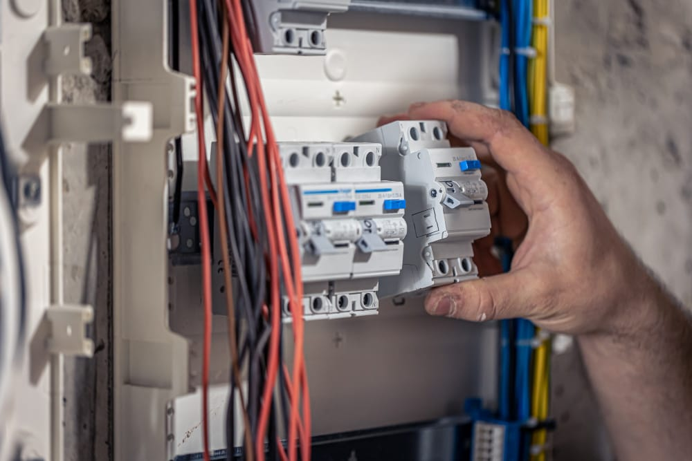

Elektricien Veghel 24 uur ⚡
De aardlekschakelaar speelt een cruciale rol in de veiligheid van uw groepenkast. Werkt deze niet meer goed of is hij defect? Geen zorgen – Elektricien Veghel 24 uur vervangt uw aardlekschakelaar snel, veilig en vakkundig!

Bij Elektricien Veghel 24 uur weten we als geen ander hoe belangrijk het is om uw woning of bedrijf elektrisch veilig te houden. Een goed werkende aardlekschakelaar is daarbij onmisbaar. Maar wat is precies het belang van een aardlekschakelaar? Wanneer moet u deze laten vervangen, en is het eigenlijk verplicht?
Onze ervaren elektriciens staan dag en nacht klaar om uw installatie te controleren, te vernieuwen en te beveiligen volgens de hoogste veiligheidsnormen. Zo bent u altijd beschermd tegen stroomlekken en kortsluitingen. Wij voeren deze werkzaamheden uit voor zowel particulieren als bedrijven en utiliteitsprojecten. Veiligheid staat bij ons altijd op nummer één.
Een goed werkende aardlekschakelaar is van groot belang voor uw veiligheid. Deze schakelt de stroom direct uit bij gevaar, bijvoorbeeld bij kortsluiting of stroomlek. Wanneer uw aardlekschakelaar echter te gevoelig is, kan deze onnodig vaak uitschakelen – vooral als u meerdere zware apparaten tegelijk gebruikt. Werkt de aardlekschakelaar niet goed meer of is deze defect? Dan is het verstandig om deze zo snel mogelijk te laten vervangen.
De specialisten van Elektricien Veghel 24 uur kunnen uw aardlekschakelaar veilig en vakkundig aansluiten of vervangen. Wilt u liever zelf aan de slag? Wij geven u graag een duidelijk stappenplan en professioneel advies, zodat uw installatie altijd veilig blijft.

Net als alle andere elektrische onderdelen heeft ook een aardlekschakelaar een beperkte levensduur. Hoewel er geen vaste termijn is voor vervanging, zijn er wel duidelijke signalen die erop wijzen dat uw aardlekschakelaar aan vervanging toe is. Wanneer u merkt dat de schakelaar regelmatig uitvalt, niet meer goed reageert of verouderd is, kan het verstandig zijn om deze te laten vervangen door een moderne polige aardlekschakelaar. De experts van Elektricien Veghel 24 uur helpen u graag om uw elektrische installatie weer veilig en betrouwbaar te maken.
Een belangrijk waarschuwingssignaal is wanneer uw aardlekschakelaar regelmatig uitschakelt zonder duidelijke oorzaak. Dit kan wijzen op een defect of slijtage in het apparaat. De levensduur van een aardlekschakelaar verschilt per merk en model, waardoor het verstandig is om de handleiding van de fabrikant te raadplegen voor specifieke informatie over onderhoud en vervanging. Twijfelt u over de werking van uw aardlekschakelaar? De experts van Elektricien Veghel 24 uur controleren en vervangen deze graag om uw elektrische installatie weer volledig veilig te maken.

Een goed werkende aardlekschakelaar is niet alleen sterk aanbevolen, maar ook verplicht volgens de Nederlandse veiligheidsvoorschriften. Sinds 2005 moet iedere meterkast minimaal twee aardlekschakelaars bevatten. Dit geldt zowel voor nieuwe installaties als bij verbouwingen of uitbreidingen van bestaande elektra. Deze verplichting is ingesteld om de veiligheid van u en uw omgeving te garanderen. Het veilig aansluiten van een aardlekschakelaar is daarom van groot belang. De elektriciens van Elektricien Veghel 24 uur zorgen ervoor dat uw installatie volledig voldoet aan de huidige normen en veilig in gebruik is.
Tegenwoordig moeten alle stopcontacten verplicht worden beveiligd met een extra aardlekschakelaar. Daarnaast is het verplicht om meerdere aardlekschakelaars te gebruiken, zodat niet uw hele installatie uitvalt bij een eventuele aardlek. Deze schakelaars zijn een vast onderdeel van de groepenkast en zijn sinds 1975 verplicht in zowel nieuwe als aangepaste huisinstallaties volgens de NEN 1010-norm.
Heeft u nog geen aardlekschakelaar in uw meterkast? Dan is het belangrijk om er één te laten installeren. Laat het aansluiten van een aardlekschakelaar altijd uitvoeren door een erkende elektricien van Elektricien Veghel 24 uur – voor een veilige en betrouwbare installatie.
Bij Elektricien Veghel 24 uur werken ervaren en gecertificeerde elektriciens die precies weten hoe ze veilig een extra aardlekschakelaar moeten aansluiten. Onze specialisten beginnen altijd met een grondige inspectie van uw elektrische installatie om te controleren of er andere problemen zijn en of een extra aardlekschakelaar daadwerkelijk nodig is.
Hoe wij te werk gaan?
Voordat we starten, schakelen we de stroom volledig uit om veilig te kunnen werken. Vervolgens verwijderen we het deksel van de groepenkast en verbinden de kabels zorgvuldig met de verdeelblokjes en de aardlekschakelaar. De bedrading wordt netjes achter de DIN-rail bevestigd en alle verbindingen worden stevig vastgedraaid. Tot slot plaatsen we coderingstickers op de aardlekschakelaar en schakelen de stroom weer in. Zo bent u verzekerd van een professioneel en veilig aangesloten installatie.
Het is belangrijk om te weten wanneer uw aardlekschakelaar defect is, zodat u tijdig kunt ingrijpen en de nodige reparaties kunt laten uitvoeren. Er zijn verschillende signalen die erop wijzen dat uw aardlekschakelaar aan vervanging toe is.
Wanneer de aardlekschakelaar regelmatig uitschakelt zonder dat er sprake is van een lekstroom, kan dit duiden op een intern defect. Let ook op zichtbare schade, zoals scheurtjes, verkleuring of losse bedrading – dit zijn duidelijke tekenen van slijtage. Reageert de schakelaar niet op de testknop, dan functioneert deze mogelijk niet meer goed.
Is uw aardlekschakelaar al jarenlang in gebruik? Dan kan deze simpelweg het einde van zijn levensduur hebben bereikt. In dat geval is het verstandig om te kiezen voor een nieuwe aardlekschakelaar van een betrouwbaar A-merk, professioneel geïnstalleerd door Elektricien Veghel 24 uur.

Staat uw vraag er niet tussen? Geen probleem – onze medewerkers van Elektricien Veghel 24 uur staan dag en nacht voor u klaar om u verder te helpen.
Bel 085 212 9861Hoewel het technisch mogelijk is, wordt dit sterk afgeraden. Een verkeerde aansluiting kan leiden tot gevaarlijke situaties. Laat dit daarom altijd uitvoeren door een erkende elektricien, zoals Elektricien Veghel 24 uur, die zorgt voor een veilige en professionele installatie.
Neem contact op met onze elektricien.